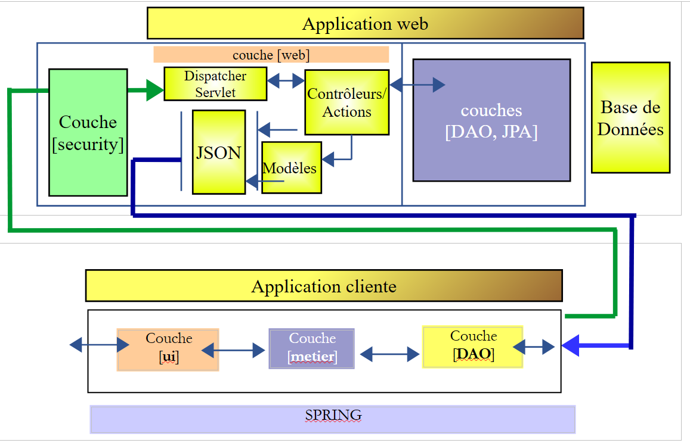
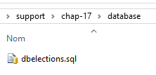
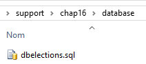
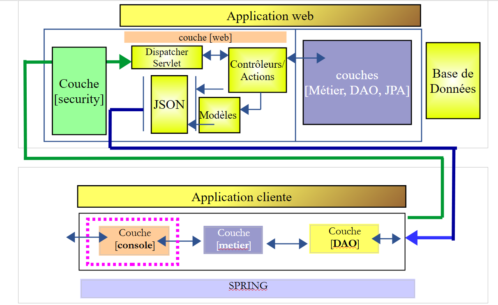
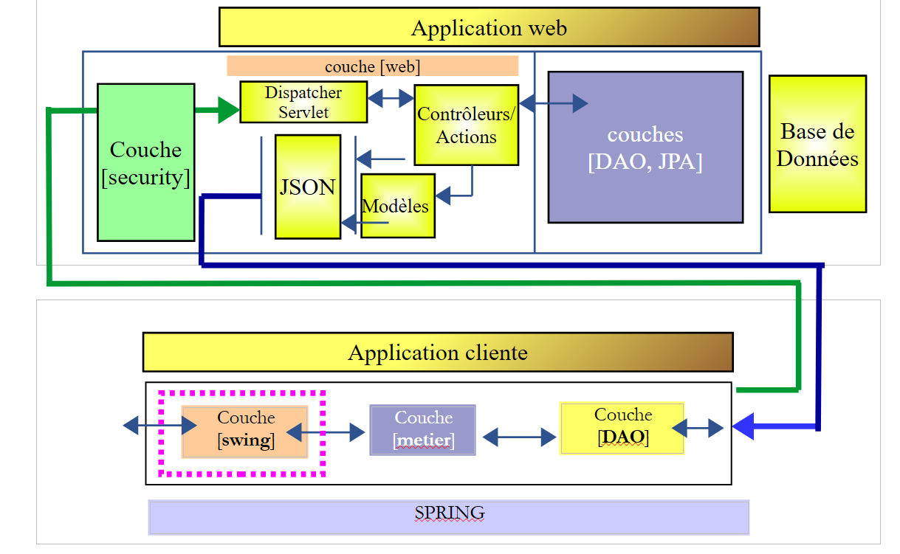
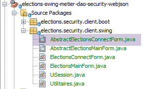
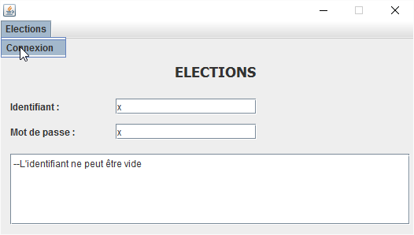

17. [TD]: تأمين خادم الويب / jSON للانتخابات
الكلمات الرئيسية: بنية متعددة الطبقات، Spring، حقن التبعيات، خدمة ويب / jSON آمنة، عميل / خادم
نطبق الآن ما تعلمناه في الفصل السابق على TD للانتخابات. ستكون البنية كما يلي:
 |
سيتم التقدم على النحو التالي:
- كتابة الخادم؛
- كتابة العميل بدون طبقة [ui] ولكن مع اختبار JUnit لطبقة [métier]؛
- كتابة العميل مع الطبقة [ui]؛
17.1. Support
 |  |
ستجد مشاريع هذا الفصل في المجلد [support / chap-17]. يستخدم البرنامج النصي SQL لإنشاء قاعدة البيانات اللازمة للاختبارات.
17.2. قاعدة البيانات
يجب أن تحتوي قاعدة بيانات الخادم الآمن الآن على الجداول [USERS] و [ROLES] و [USERS_ROLES]:
 |  |
يتوفر البرنامج النصي SQL الخاص بإنشاء قاعدة البيانات في دعم المستند.
17.3. الخادم الآمن
لإعداد الخادم الآمن للانتخابات، يكفي نسخ ولصق مشروع المثال [intro-spring-security-server-01]:
 |
المهمة المطلوبة: إعادة تسمية الحزم كما هو موضح في [1].
بعد ذلك، نقوم بتعديل الملف [pom.xml] بالطريقة التالية:
<project xmlns="http://maven.apache.org/POM/4.0.0" xmlns:xsi="http://www.w3.org/2001/XMLSchema-instance"
xsi:schemaLocation="http://maven.apache.org/POM/4.0.0 http://maven.apache.org/xsd/maven-4.0.0.xsd">
<modelVersion>4.0.0</modelVersion>
<groupId>istia.st.elections</groupId>
<artifactId>elections-security-webjson-metier-dao-spring-data</artifactId>
<version>0.0.1-SNAPSHOT</version>
<name>elections-security-webjson-metier-dao-spring-data</name>
<description>elections spring security</description>
<properties>
<project.build.sourceEncoding>UTF-8</project.build.sourceEncoding>
<java.version>1.8</java.version>
</properties>
<parent>
<groupId>org.springframework.boot</groupId>
<artifactId>spring-boot-starter-parent</artifactId>
<version>1.2.7.RELEASE</version>
</parent>
<dependencies>
<dependency>
<groupId>istia.st.elections</groupId>
<artifactId>elections-webjson-metier-dao-spring-data</artifactId>
<version>0.0.1-SNAPSHOT</version>
</dependency>
<!-- أمان Spring -->
...
</dependencies>
<!-- المكونات الإضافية -->
<build>
...
</build>
</project>
- في الأسطر 23-27، استبدل التبعية للمشروع [intro-server-webjson-01] بالتبعية للمشروع [elections-webjson-metier-dao-spring-data] الذي تمت دراسته في الفقرة 12؛
- في الأسطر 4-7، أدخل خصائص المشروع الجديد؛
يبقى لنا تعديل فئات التكوين للمشروع:
[DaoConfig]
package elections.security.config;
import org.springframework.context.annotation.Bean;
import org.springframework.context.annotation.ComponentScan;
import org.springframework.context.annotation.Import;
import org.springframework.data.jpa.repository.config.EnableJpaRepositories;
@EnableJpaRepositories(basePackages = { "elections.security.repositories" })
@ComponentScan(basePackages = { "elections.security.dao" })
@Import({ elections.dao.config.DaoConfig.class })
public class DaoConfig {
// الثوابت
final static private String[] ENTITIES_PACKAGES = { "elections.dao.entities", "elections.security.entities" };
@Bean
public String[] packagesToScan() {
return ENTITIES_PACKAGES;
}
}
التعديلات موجودة في الأسطر التالية:
- الأسطر 8 و9 و14: أدخل أسماء الحزم الصحيحة؛
- السطر 10: الفئة المستوردة هي الآن [elections.dao.config.DaoConfig] من المشروع [elections-webjson-metier-dao-spring-data]؛
ملاحظة: كما ذكرنا سابقًا، لا تعمل هذه التهيئة إلا إذا كانت الفئة [elections.dao.config.DaoConfig] تحتوي على التعليق التوضيحي [@Configuration]. يرجى التحقق من هذه النقطة.
[SecurityConfig]
package elections.security.config;
...
@EnableWebSecurity
@ComponentScan(basePackages = { "elections.security.service" })
@Import({ WebConfig.class, DaoConfig.class })
public class SecurityConfig extends WebSecurityConfigurerAdapter {
...
}
التعديلات موجودة في الأسطر التالية:
- السطر 6: قم بتغيير اسم الحزمة؛
هذا كل شيء. قم بإجراء اختبار أولي عن طريق تشغيل الاختبار JUnit []:
 |
قم بتشغيل فئة التمهيد [Boot] ثم باستخدام ملحق Chrome [Advanced Rest Client] قم بإجراء الاختبار التالي:
 |
في [1]، الطلب. في [3]، الرد. في [2]، الرأس HTTP هو رأس مصادقة المستخدم [admin, admin]: Authorization:Basic YWRtaW46YWRtaW4=
اطلب الآن، القوائم المتنافسة:
 |
17.4. عميل الخادم الآمن بدون الطبقة [ui]
 |
انسخ/الصق المشروع [elections-ui-metier-dao-webjson] في المشروع [elections-metier-dao-security-webjson].
 |
المهمة المطلوبة: في [1]، قم بإعادة تسمية الحزم إذا لزم الأمر وحذف تلك الموجودة في الطبقة [ui] وفئات البدء [boot].
سنقوم الآن بالعمل كما تم في الفقرة 16.5.
17.4.1. تكوين Maven
يتغير فقط جزء تعريف المشروع:
<project xmlns="http://maven.apache.org/POM/4.0.0" xmlns:xsi="http://www.w3.org/2001/XMLSchema-instance"
xsi:schemaLocation="http://maven.apache.org/POM/4.0.0 http://maven.apache.org/xsd/maven-4.0.0.xsd">
<modelVersion>4.0.0</modelVersion>
<groupId>istia.st.elections</groupId>
<artifactId>elections-metier-dao-security-webjson</artifactId>
<version>0.0.1-SNAPSHOT</version>
<description>Client jUnit du serveur web / jSON</description>
<name>elections-metier-dao-security-webjson</name>
...
17.4.2. إعادة هيكلة الطبقة [métier]
 |
تتطور واجهة [IElectionsMetier] على النحو التالي:
package elections.security.client.metier;
import elections.security.client.entities.ListeElectorale;
import elections.security.client.entities.User;
public interface IElectionsMetier {
// المصادقة
public void authenticate(User user);
// الحصول على قوائم المنافسة
public ListeElectorale[] getListesElectorales(User user);
// عدد المقاعد الشاغرة
public int getNbSiegesAPourvoir(User user);
// الحد الأدنى للانتخاب
public double getSeuilElectoral(User user);
// تسجيل النتائج
public void recordResultats(User user, ListeElectorale[] listesElectorales);
// حساب المقاعد
public ListeElectorale[] calculerSieges(User user, ListeElectorale[] listesElectorales);
}
يكون المعلمة الأولى لجميع الطرق هي المستخدم الذي يرغب في استخدام موارد الخادم الآمن.
يتطور التنفيذ [ElectionsMetier] على النحو التالي:
package elections.security.client.metier;
import java.io.IOException;
import org.springframework.beans.factory.annotation.Autowired;
import org.springframework.context.ApplicationContext;
import org.springframework.stereotype.Component;
import com.fasterxml.jackson.core.type.TypeReference;
import com.fasterxml.jackson.databind.ObjectMapper;
import elections.security.client.dao.IClientDao;
import elections.security.client.entities.ElectionsConfig;
import elections.security.client.entities.ElectionsException;
import elections.security.client.entities.ListeElectorale;
import elections.security.client.entities.User;
@Component
public class ElectionsMetier implements IElectionsMetier {
@Autowired
private IClientDao dao;
@Autowired
private ApplicationContext context;
// تكوين الانتخابات
private ElectionsConfig electionsConfig;
private ElectionsConfig getElectionsConfig(User user) {
if(electionsConfig!=null){
return electionsConfig;
}
// أدوات التعيين jSON
ObjectMapper mapperResponse = context.getBean(ObjectMapper.class);
try {
// الاستعلام
Response<ElectionsConfig> response = mapperResponse.readValue(dao.getResponse(user, "/getElectionsConfig", null),
new TypeReference<Response<ElectionsConfig>>() {
});
// خطأ؟
if (response.getStatus() != 0) {
// يتم إلقاء استثناء واحد
throw new ElectionsException(response.getStatus(), response.getMessages());
} else {
electionsConfig = response.getBody();
return electionsConfig;
}
} catch (ElectionsException e1) {
throw e1;
} catch (IOException | RuntimeException e2) {
throw new ElectionsException(100, e2);
}
}
@Override
public ListeElectorale[] getListesElectorales(User user) {
...
}
@Override
public int getNbSiegesAPourvoir(User user) {
return getElectionsConfig(user).getNbSiegesAPourvoir();
}
@Override
public double getSeuilElectoral(User user) {
return getElectionsConfig(user).getSeuilElectoral();
}
@Override
public void recordResultats(User user, ListeElectorale[] listesElectorales) {
...
}
@Override
public ListeElectorale[] calculerSieges(User user, ListeElectorale[] listesElectorales) {
...
}
@Override
public void authenticate(User user) {
dao.getResponse(user, "/authenticate", null);
}
}
المهمة المطلوبة: أكمل الكود أعلاه.
17.4.3. تكوين Spring
 |
تتطور الفئة [MetierConfig] على النحو التالي:
package elections.security.client.config;
...
@ComponentScan({ "elections.security.client.dao", "elections.security.client.metier" })
public class MetierConfig {
السطر 5، يجب تحديث الحزم المطلوب استكشافها.
17.4.4. اختبار JUnit للطبقة [métier]
 |
تتطور فئة الاختبار [Test01] على النحو التالي:
package elections.security.client.metier.junit;
import org.junit.Assert;
import org.junit.BeforeClass;
import org.junit.Test;
import org.junit.runner.RunWith;
import org.springframework.beans.factory.annotation.Autowired;
import org.springframework.boot.test.SpringApplicationConfiguration;
import org.springframework.test.context.junit4.SpringJUnit4ClassRunner;
import com.fasterxml.jackson.core.JsonProcessingException;
import com.fasterxml.jackson.databind.ObjectMapper;
import elections.security.client.config.MetierConfig;
import elections.security.client.entities.ElectionsException;
import elections.security.client.entities.ListeElectorale;
import elections.security.client.entities.User;
import elections.security.client.metier.IElectionsMetier;
@SpringApplicationConfiguration(classes = MetierConfig.class)
@RunWith(SpringJUnit4ClassRunner.class)
public class Test01 {
// طبقة [electionsMetier]
@Autowired
private IElectionsMetier electionsMetier;
// مُخطِط jSON
private final ObjectMapper mapper = new ObjectMapper();
// المستخدمون
static private User admin;
static private User user;
static private User unknown;
@BeforeClass
public static void initTest() {
admin = new User("admin", "admin");
user = new User("user", "user");
unknown = new User("x", "y");
}
@Test()
public void checkUserUser() {
ElectionsException se = null;
try {
electionsMetier.authenticate(user);
} catch (ElectionsException e) {
se = e;
}
Assert.assertNotNull(se);
Assert.assertEquals("403 Forbidden", se.getErreurs().get(0));
}
@Test()
public void checkUserUnknown() {
ElectionsException se = null;
try {
electionsMetier.authenticate(unknown);
} catch (ElectionsException e) {
se = e;
}
Assert.assertNotNull(se);
Assert.assertEquals("401 Unauthorized", se.getErreurs().get(0));
}
@Test()
public void checkUserAdmin() {
ElectionsException se = null;
try {
electionsMetier.authenticate(admin);
} catch (ElectionsException e) {
se = e;
}
Assert.assertNull(se);
}
/**
* vérification 1 : méthode de calcul des sièges on fixe en dur les listes
*/
@Test
public void calculSieges1() {
// يتم إنشاء جدول القوائم السبع المرشحة
ListeElectorale[] listes = new ListeElectorale[7];
listes[0] = new ListeElectorale("A", 32000, 0, false);
listes[1] = new ListeElectorale("B", 25000, 0, false);
listes[2] = new ListeElectorale("C", 16000, 0, false);
listes[3] = new ListeElectorale("D", 12000, 0, false);
listes[4] = new ListeElectorale("E", 8000, 0, false);
listes[5] = new ListeElectorale("F", 4500, 0, false);
listes[6] = new ListeElectorale("G", 2500, 0, false);
// يتم حساب المقاعد لكل قائمة
listes = electionsMetier.calculerSieges(admin,listes);
// التحقق من النتائج
Assert.assertEquals(2, listes[0].getSieges());
Assert.assertFalse(listes[0].isElimine());
Assert.assertEquals(2, listes[1].getSieges());
Assert.assertFalse(listes[1].isElimine());
Assert.assertEquals(1, listes[2].getSieges());
Assert.assertFalse(listes[2].isElimine());
Assert.assertEquals(1, listes[3].getSieges());
Assert.assertFalse(listes[3].isElimine());
Assert.assertEquals(0, listes[4].getSieges());
Assert.assertFalse(listes[4].isElimine());
Assert.assertEquals(0, listes[5].getSieges());
Assert.assertTrue(listes[5].isElimine());
Assert.assertEquals(0, listes[6].getSieges());
Assert.assertTrue(listes[6].isElimine());
}
/**
* vérification 2 : méthode de calcul des sièges on demande les listes à la couche [metier] puis on fixe en dur les
* voix
*/
@Test
public void calculSieges2() {
// يتم إنشاء جدول القوائم المرشحة السبع
ListeElectorale[] listes = electionsMetier.getListesElectorales(admin);
// يتم تثبيت الأصوات
listes[0].setVoix(32000);
listes[1].setVoix(25000);
listes[2].setVoix(16000);
listes[3].setVoix(12000);
listes[4].setVoix(8000);
listes[5].setVoix(4500);
listes[6].setVoix(2500);
// يتم حساب المقاعد التي حصلت عليها كل قائمة
listes = electionsMetier.calculerSieges(admin,listes);
// يتم التحقق من النتائج
Assert.assertEquals(2, listes[0].getSieges());
Assert.assertFalse(listes[0].isElimine());
Assert.assertEquals(2, listes[1].getSieges());
Assert.assertFalse(listes[1].isElimine());
Assert.assertEquals(1, listes[2].getSieges());
Assert.assertFalse(listes[2].isElimine());
Assert.assertEquals(1, listes[3].getSieges());
Assert.assertFalse(listes[3].isElimine());
Assert.assertEquals(0, listes[4].getSieges());
Assert.assertFalse(listes[4].isElimine());
Assert.assertEquals(0, listes[5].getSieges());
Assert.assertTrue(listes[5].isElimine());
Assert.assertEquals(0, listes[6].getSieges());
Assert.assertTrue(listes[6].isElimine());
}
/**
* vérification 3 méthode de calcul des sièges on provoque une exception
*/
@Test(expected = ElectionsException.class)
public void calculSieges3() {
// يتم إنشاء جدول يضم 24 قائمة مرشحة مع صوت واحد لكل منها
ListeElectorale[] listes = new ListeElectorale[25];
// ستحصل القوائم الـ 25 على نفس عدد الأصوات (4%)
for (int i = 0; i < listes.length; i++) {
listes[i] = new ListeElectorale("Liste" + (i + 1), 1, 0, false);
}
// حساب المقاعد - عادةً يجب أن يكون لدينا ElectionsException
// مع عتبة انتخابية تبلغ 5%
electionsMetier.calculerSieges(admin,listes);
}
/**
* enregistrement des résultats de l'élection
*
* @throws JsonProcessingException
*/
@Test
public void ecritureResultatsElections() throws JsonProcessingException {
// يتم إنشاء جدول القوائم المرشحة السبع
ListeElectorale[] listes = electionsMetier.getListesElectorales(admin);
// يتم تحديد الأصوات بشكل ثابت
listes[0].setVoix(32000);
listes[1].setVoix(25000);
listes[2].setVoix(16000);
listes[3].setVoix(12000);
listes[4].setVoix(8000);
listes[5].setVoix(4500);
listes[6].setVoix(2500);
// يتم حساب المقاعد التي حصلت عليها كل قائمة
listes = electionsMetier.calculerSieges(admin,listes);
// يتم عرض النتائج
for (int i = 0; i < listes.length; i++) {
System.out.println(mapper.writeValueAsString(listes[i]));
}
// يتم تسجيل النتائج في قاعدة البيانات
electionsMetier.recordResultats(admin,listes);
// يتم التحقق من النتائج
listes = electionsMetier.getListesElectorales(admin);
// يتم عرض النتائج
for (int i = 0; i < listes.length; i++) {
System.out.println(mapper.writeValueAsString(listes[i]));
}
Assert.assertEquals(2, listes[0].getSieges());
Assert.assertFalse(listes[0].isElimine());
Assert.assertEquals(2, listes[1].getSieges());
Assert.assertFalse(listes[1].isElimine());
Assert.assertEquals(1, listes[2].getSieges());
Assert.assertFalse(listes[2].isElimine());
Assert.assertEquals(1, listes[3].getSieges());
Assert.assertFalse(listes[3].isElimine());
Assert.assertEquals(0, listes[4].getSieges());
Assert.assertFalse(listes[4].isElimine());
Assert.assertEquals(0, listes[5].getSieges());
Assert.assertTrue(listes[5].isElimine());
Assert.assertEquals(0, listes[6].getSieges());
Assert.assertTrue(listes[6].isElimine());
}
}
المهمة المطلوبة: فهم هذا الاختبار والتحقق من نجاحه.
17.5. عميل الخادم الآمن مع طبقة [console]
 |
باستخدام Netbeans، نفتح مشاريع Maven [elections-metier-dao-security-webjson] و [elections-ui-metier-dao-webjson] ثم نقوم بإنشاء مشروع جديد [elections-console-metier-dao-security-webjson] عن طريق نسخ ولصق مشروع [elections-ui-metier-dao-webjson]:
 |
تأتي معظم فئات المشروع الجديد [3] من المشروع [elections-ui-metier-dao-webjson] [2] الذي كان عميل خادم الويب / jSON غير الآمن:
 |
اتبع الخطوات التالية لإنشاء مشروع Maven الجديد:
- انسخ/الصق المشروع [elections-ui-metier-dao-webjson] في المشروع [elections-ui-metier-dao-security-webjson]؛
- في المشروع الجديد:
- احذف الحزم [elections.client.dao, elections.client.metier, elections.client.entities]؛
- في الحزمة [elections.client.ui]، احتفظ فقط بالفئة console [ElectionsConsole] وواجهتها [IElectionsUI]؛
- أعد تسمية الحزم كما هو موضح في [3]؛
- قم بحل مشاكل الاستيراد في الفئات المختلفة باستخدام [clic droit / Fix Imports]؛
في هذه المرحلة، يحتوي المشروع الجديد على العديد من الأخطاء.
17.5.1. تكوين Maven
ملف [pom.xml] للمشروع الجديد هو التالي:
<project xmlns="http://maven.apache.org/POM/4.0.0" xmlns:xsi="http://www.w3.org/2001/XMLSchema-instance"
xsi:schemaLocation="http://maven.apache.org/POM/4.0.0 http://maven.apache.org/xsd/maven-4.0.0.xsd">
<modelVersion>4.0.0</modelVersion>
<groupId>istia.st.elections</groupId>
<artifactId>elections-console-metier-dao-security-webjson</artifactId>
<version>0.0.1-SNAPSHOT</version>
<name>elections-console-metier-dao-security-webjson</name>
<description>couche console du client web / jSON</description>
<properties>
<project.build.sourceEncoding>UTF-8</project.build.sourceEncoding>
<java.version>1.8</java.version>
</properties>
<parent>
<groupId>org.springframework.boot</groupId>
<artifactId>spring-boot-starter-parent</artifactId>
<version>1.2.7.RELEASE</version>
</parent>
<dependencies>
<dependency>
<groupId>istia.st.elections</groupId>
<artifactId>elections-metier-dao-security-webjson</artifactId>
<version>0.0.1-SNAPSHOT</version>
</dependency>
</dependencies>
<build>
<plugins>
<plugin>
<groupId>org.apache.maven.plugins</groupId>
<artifactId>maven-surefire-plugin</artifactId>
<version>2.18.1</version>
</plugin>
</plugins>
</build>
</project>
- الأسطر 4-8: هوية Maven للمشروع الجديد؛
- الأسطر 22-26: التبعية لمشروع [elections-metier-dao-security-webjson] الذي أنشأناه للتو في الفقرة 17.4، والذي يوفر الطبقات [DAO] و [métier]؛
17.5.2. تكوين Spring
 |
الفئة [UiConfig] هي كما يلي:
package elections.security.client.config;
import elections.security.client.entities.User;
import org.springframework.context.annotation.Bean;
import org.springframework.context.annotation.ComponentScan;
import org.springframework.context.annotation.Import;
@Import(MetierConfig.class)
@ComponentScan(basePackages = {"elections.security.client.console","elections.security.client.swing"})
public class UiConfig {
// المسؤول
private final User ADMIN = new User("admin", "admin");
@Bean
private User admin() {
return ADMIN;
}
}
- السطر 8: يتم استيراد الفئة [elections.security.client.config.MetierConfig] من المشروع [elections-metier-dao-security-webjson] الذي تمت دراسته في الفقرة 17.4؛
- السطر 9: يتم إعلان الحزم التي توجد بها حبوب Spring؛
- الأسطر 12-18: bean [admin] هو المستخدم [admin, admin] الذي ستستخدمه تطبيق وحدة التحكم. نتذكر أنه المستخدم الوحيد المصرح له بالاستعلام عن خادم الويب الآمن / jSON؛
17.5.3. تطبيق تشغيل وحدة التحكم
 |
تتطور الفئة [ElectionsConsole] على النحو التالي:
package elections.security.client.console;
import java.util.Arrays;
import java.util.Comparator;
import java.util.Scanner;
import org.springframework.beans.factory.annotation.Autowired;
import org.springframework.stereotype.Component;
import elections.security.client.entities.ElectionsException;
import elections.security.client.entities.ListeElectorale;
import elections.security.client.entities.User;
import elections.security.client.metier.IElectionsMetier;
@Component
public class ElectionsConsole implements IElectionsUI {
@Autowired
private IElectionsMetier electionsMetier;
@Autowired
private User admin;
@Override
public void run() {
// القوائم المتنافسة
ListeElectorale[] listes;
// إدخال البيانات
try (Scanner clavier = new Scanner(System.in)) {
// طلب القوائم المتنافسة من الطبقة [metier]
listes = electionsMetier.getListesElectorales(admin);
// يتم إدخال الأصوات
System.out.println("Il y a " + listes.length
+ " listes en compétition. Veuillez indiquer le nombre de voix de chacune d'elles :");
for (int i = 0; i < listes.length; i++) {
boolean saisieOK = false;
while (!saisieOK) {
System.out.print("Nombre de voix de la liste [" + listes[i].getNom() + "] : ");
try {
listes[i].setVoix(Integer.parseInt(clavier.nextLine()));
saisieOK = true;
} catch (ElectionsException | NumberFormatException ex) {
System.out.println("Nombre de voix incorrect. Veuillez recommencer");
}
}
}
}
// يتم حساب المقاعد
listes=electionsMetier.calculerSieges(admin,listes);
// يتم تسجيل النتائج
electionsMetier.recordResultats(admin,listes);
// يتم فرز القوائم حسب ترتيب الأصوات التنازلي
Arrays.sort(listes, new CompareListesElectorales());
// يتم عرضها
System.out.println("\nRésultats de l'élection\n");
for (int i = 0; i < listes.length; i++) {
System.out.println(listes[i]);
}
}
// فئة مقارنة القوائم الانتخابية
class CompareListesElectorales implements Comparator<ListeElectorale> {
// مقارنة قائمتين مرشحتين حسب عدد الأصوات
@Override
public int compare(ListeElectorale listeElectorale1, ListeElectorale listeElectorale2) {
// مقارنة الأصوات بين هاتين القائمتين
int nbVoix1 = listeElectorale1.getVoix();
int nbVoix2 = listeElectorale2.getVoix();
if (nbVoix1 < nbVoix2) {
return +1;
} else {
if (nbVoix1 > nbVoix2)
return -1;
else
return 0;
}
}
}
}
لا تتغير الفئة ElectionsConsole إلا قليلاً. يجب فقط تذكر أن طرق الطبقة [métier] تتطلب الآن مستخدمًا كمعلمة أولى (الأسطر 31 و49 و51). ويتم توفير هذا المستخدم عن طريق الحقن في الأسطر 21-22. المستخدم الذي تم إدخاله هو المستخدم المصرح له بالاستعلام عن خادم الويب / jSON.
المهمة المطلوبة: اختبر تطبيق وحدة التحكم (تذكر تشغيل الخادم الآمن مسبقًا).
17.6. عميل الخادم الآمن مع طبقة [swing]
 |
نقوم بإنشاء مشروع Netbeans جديد [elections-swing-metier-dao-security-webjson] عن طريق نسخ ولصق مشروع [elections-ui-metier-dao-webjson]:
 |
في المشروع الجديد [2]:
- احذف الحزم [elections.client.dao, elections.client.metier, elections.client.entities]؛
- في الحزمة [elections.client.ui]، احذف الفئات [ElectionsConsole, IElectionsUI]؛
- أعد تسمية الحزم كما هو موضح في [2]؛
- في الحزمة [elections.security.client.swing]، قم بتغيير اسم الفئة [AbstractElectionsSwing] التي تنفذ واجهة المستخدم الرسومية إلى [AbstractElectionsMainForm] والفئة [ElectionsSwing] التي تنفذ معالجات أحداثالواجهة الرسومية إلى [ElectionsMainForm]؛
- قم بحل مشاكل الاستيراد في الفئات المختلفة باستخدام [clic droit / Fix Imports]؛
في هذه المرحلة، هناك العديد من الأخطاء.
17.6.1. تكوين Maven
يتطور الملف [pom.xml] على النحو التالي:
<project xmlns="http://maven.apache.org/POM/4.0.0" xmlns:xsi="http://www.w3.org/2001/XMLSchema-instance"
xsi:schemaLocation="http://maven.apache.org/POM/4.0.0 http://maven.apache.org/xsd/maven-4.0.0.xsd">
<modelVersion>4.0.0</modelVersion>
<groupId>istia.st.elections</groupId>
<artifactId>elections-swing-metier-dao-security-webjson</artifactId>
<version>0.0.1-SNAPSHOT</version>
<name>elections-swing-metier-dao-security-webjson</name>
<description>couche swing du client web / jSON</description>
<properties>
<project.build.sourceEncoding>UTF-8</project.build.sourceEncoding>
<java.version>1.8</java.version>
</properties>
<parent>
<groupId>org.springframework.boot</groupId>
<artifactId>spring-boot-starter-parent</artifactId>
<version>1.2.7.RELEASE</version>
</parent>
<dependencies>
<dependency>
<groupId>istia.st.elections</groupId>
<artifactId>elections-console-metier-dao-security-webjson</artifactId>
<version>0.0.1-SNAPSHOT</version>
</dependency>
</dependencies>
<build>
<plugins>
<plugin>
<groupId>org.apache.maven.plugins</groupId>
<artifactId>maven-surefire-plugin</artifactId>
<version>2.18.1</version>
</plugin>
</plugins>
</build>
</project>
- الأسطر 4-8: هوية Maven للمشروع الجديد؛
- الأسطر 22-26: تبعية لمشروع console الذي درسناه للتو في الفقرة 17.5؛
17.6.2. تكوين Spring
يستخدم هذا المشروع تكوين Spring الخاص بمشروع console الذي يستورده (انظر الفقرة 17.5.2).
17.6.3. طرق عرض تطبيق Swing
 |
سيستخدم هذا المشروع عرضين:
 |
- طريقة العرض [1] الخاصة بتسجيل الدخول هي طريقة عرض جديدة. وهي تُستخدم لمصادقة المستخدم الذي يرغب في استخدام التطبيق. وهي تستخدم الفئات:
- [AbstractElectionsConnectForm] التي تنفذ العرض؛
- [ElectionsConnectForm] التي تدير أحداث العرض؛
- الطريقة [2] معروفة. وهي الطريقة المستخدمة حتى الآن. وهي تستخدم الفئات:
- [AbstractElectionsMainForm] التي تنفذ العرض؛
- [ElectionsMainForm] التي تدير أحداث العرض؛
17.6.4. الجلسة
 |
عندما تحتوي تطبيقات Swing على عدة طرق عرض، يجب إيجاد وسيلة تسمح لطريقة عرض ما بنقل المعلومات إلى طريقة عرض أخرى. نستخدم مفهومًا مستخدمًا في تطوير الويب: الجلسة التي تسمح لطرق العرض المرتبطة بمستخدم معين بمشاركة المعلومات. سيتم تنفيذ هذا المفهوم هنا باستخدام Spring singleton الذي سيتم إدخاله في الفئتين اللتين تديران أحداث طريقتي العرض:
package elections.security.client.swing;
import elections.security.client.entities.User;
import org.springframework.stereotype.Component;
@Component
public class UiSession {
// المستخدم المسجل
private User user;
// مُستردات ومُعيّنات
...
}
- السطر 6: الفئة [UiSession] هي مكون Spring؛
- السطر 10: لا تخدم سوى غرض واحد: حفظ المستخدم الذي يتصل بالعرض [1]. العرض [2] الذي يحتاج إلى معرفة هذا المستخدم سيبحث عنه هناك؛
17.6.5. فئة التمهيد
 |
فئة التمهيد للتطبيق الرسومي هي التالية:
package elections.security.client.boot;
import elections.security.client.console.IElectionsUI;
public class BootElectionsSwing extends AbstractBootElections {
public static void main(String[] arguments) {
new BootElectionsSwing().run();
}
@Override
protected IElectionsUI getUI() {
return ctx.getBean("electionsConnectForm", IElectionsUI.class);
}
}
- السطر 5: فئة [BootElectionsSwing] توسع فئة [AbstractBootElections] المحددة في مشروع وحدة التحكم الموجود في تبعيات المشروع؛
- الأسطر 10-13: ستقوم الفئة [BootElectionsSwing] بعرض طريقة عرض تسجيل الدخول [ElectionsConnectForm]؛
- الأسطر 6-8: ستتم تنفيذ الطريقة [run] لهذه الفئة؛
17.6.6. الفئة [ElectionsMainForm]
الفئة [ElectionsMainForm] هي التي كانت تسمى سابقًا [ElectionsSwing]. وهي تدير أحداث العرض [AbstractElectionsMainForm]. يتطور كودها على النحو التالي:
package elections.security.client.swing;
import elections.security.client.console.IElectionsUI;
import java.awt.Dimension;
import java.awt.Toolkit;
import java.util.ArrayList;
import java.util.List;
import javax.swing.DefaultListModel;
import javax.swing.JLabel;
import javax.swing.JMenuItem;
import javax.swing.JOptionPane;
import org.springframework.beans.factory.annotation.Autowired;
import org.springframework.stereotype.Component;
import elections.security.client.entities.ElectionsException;
import elections.security.client.entities.ListeElectorale;
import elections.security.client.entities.User;
import elections.security.client.metier.IElectionsMetier;
@Component
public class ElectionsMainForm extends AbstractElectionsMainForm implements IElectionsUI {
private static final long serialVersionUID = 1L;
// مرجع على الطبقة [métier]
@Autowired
private IElectionsMetier metier;
// الجلسة UI
@Autowired
private UiSession uiSession;
// المستخدم المتصل
private User user;
// قوالب القوائم JList
private DefaultListModel<String> modèleNomsVoix = null;
private DefaultListModel<String> modèleRésultats = null;
// القوائم المتنافسة
private ListeElectorale[] listes;
// القوائم التي أدخلها المستخدم
private final List<ListeElectorale> listesSaisies = new ArrayList<>();
private ListeElectorale[] tListesSaisies;
// التهيئة
@Override
protected void init() {
// إنشاء المكونات بواسطة الفئة الأصلية
super.init();
// التهيئات المحلية
modèleNomsVoix = new DefaultListModel<>();
jListNomsVoix.setModel(modèleNomsVoix);
modèleRésultats = new DefaultListModel<>();
jListResultats.setModel(modèleRésultats);
String info;
boolean erreur = false;
try {
// يتم طلب القوائم من الطبقة [métier]
listes = metier.getListesElectorales(user);
// ربط أسماء القوائم بالمنسدل jComboBoxNomsListes
for (int i = 0; i < listes.length; i++) {
jComboBoxNomsListes.addItem(String.format("%s - %s", listes[i].getId(), listes[i].getNom()));
}
// وكذلك معلمات الانتخابات
int nbSiegesAPourvoir = metier.getNbSiegesAPourvoir(user);
double seuilElectoral = metier.getSeuilElectoral(user);
// يتم تهيئة التسميات المرتبطة بهاتين المعلومتين
jLabelSAP.setText(jLabelSAP.getText() + nbSiegesAPourvoir);
jLabelSE.setText(jLabelSE.getText() + seuilElectoral);
// رسالة نجاح
info = "Source de données lue avec succès";
} catch (ElectionsException ex1) {
// يتم تسجيل الخطأ
info = getInfoForException("Les erreurs suivantes se sont produites :", ex1);
erreur = true;
} catch (RuntimeException ex2) {
// يتم تسجيل الخطأ
info = getInfoForException("Les erreurs suivantes se sont produites :", ex2);
erreur = true;
}
// خطأ؟
if (erreur) {
// عرض المعلومات
jTextPaneMessages.setText(info);
jTextPaneMessages.setCaretPosition(0);
return;
} else {
jTextPaneMessages.setText("");
}
// حالة النموذج
Utilitaires.setEnabled(new JLabel[]{jLabelAjouter, jLabelCalculer, jLabelEnregistrer, jLabelSupprimer}, false);
Utilitaires.setEnabled(
new JMenuItem[]{jMenuItemAjouter, jMenuItemCalculer, jMenuItemEnregistrer, jMenuItemSupprimer}, false);
// توسيط النافذة
Dimension screenSize = Toolkit.getDefaultToolkit().getScreenSize();
Dimension frameSize = getSize();
if (frameSize.height > screenSize.height) {
frameSize.height = screenSize.height;
}
if (frameSize.width > screenSize.width) {
frameSize.width = screenSize.width;
}
setLocation((screenSize.width - frameSize.width) / 2, (screenSize.height - frameSize.height) / 2);
}
...
@Override
public void run() {
// تخزين بيانات المستخدم
user = uiSession.getUser();
// تهيئة النافذة
init();
setVisible(true);
}
}
- السطور 32-33: إدخال جلسة التطبيق؛
- السطور 112-119: سيتم تنشيط العرض كما في السابق بواسطة طريقة [run]؛
- السطر 115: يتم استرداد المستخدم في الجلسة. وقد تم إدراجه هناك بواسطة كود عرض تسجيل الدخول [ElectionsConnectForm]. ثم يتم تعديل الكود بحيث يكون المعلمة الأولى لنداءات الطبقة [métier] هو هذا المستخدم (السطور 63 و69-70 على سبيل المثال)؛
17.6.7. عرض [AbstractElectionsConnectForm]
 |
قم بإنشاء النموذج التالي باستخدام Netbeans:
 |
لن تقوم الفئة بنفسها بتنفيذ الطريقة التي تدير النقر على خيار القائمة [Connexion]. بل ستستدعي طريقة [doConnecter] المعلنة على أنها مجردة، وستُعلن فئة العرض نفسها على أنها مجردة. سيتم حذف الطريقة الثابتة [main] التي تم إنشاؤها تلقائيًا.
17.6.8. إدارة أحداث عرض تسجيل الدخول
 |
تنفذ الفئة [ElectionsConnectForm] إدارة أحداث عرض الاتصال بالطريقة التالية:
package elections.security.client.swing;
import elections.security.client.console.IElectionsUI;
import elections.security.client.entities.ElectionsException;
import elections.security.client.entities.User;
import elections.security.client.metier.IElectionsMetier;
import java.awt.Dimension;
import java.awt.Toolkit;
import javax.swing.SwingUtilities;
import org.springframework.beans.factory.annotation.Autowired;
import org.springframework.stereotype.Component;
@Component
public class ElectionsConnectForm extends AbstractElectionsConnectForm implements IElectionsUI {
private static final long serialVersionUID = 1L;
// مرجع على الطبقة [métier]
@Autowired
private IElectionsMetier metier;
// المستخدم المتصل
private User user;
// النموذج الرئيسي
@Autowired
private ElectionsMainForm electionsMainForm;
// جلسة UI
@Autowired
private UiSession uiSession;
@Override
protected void doConnect() {
String info = null;
try {
if (isPageValid()) {
// مصادقة المستخدم
metier.authenticate(user);
// يتم حفظ المستخدم في الجلسة
uiSession.setUser(user);
// يتم إخفاء شاشة تسجيل الدخول
setVisible(false);
// يتم عرض الشاشة الرئيسية
electionsMainForm.run();
}
} catch (ElectionsException ex1) {
// تسجيل الخطأ
info = getInfoForException("Les erreurs suivantes se sont produites :", ex1);
} catch (RuntimeException ex2) {
// يتم تسجيل الخطأ
info = getInfoForException("Les erreurs suivantes se sont produites :", ex2);
}
// خطأ؟
if (info != null) {
// يتم عرض المعلومات
jTextPaneErreurs.setText(info);
jTextPaneErreurs.setCaretPosition(0);
}
}
// عمليات التهيئة
@Override
protected void init() {
// إنشاء المكونات بواسطة الفئة الأصلية
super.init();
// التهيئة المحلية
...
// توسيط النافذة
...
}
@Override
public void run() {
// يتم عرض واجهة المستخدم الرسومية
SwingUtilities.invokeLater(new Runnable() {
public void run() {
init();
setVisible(true);
}
});
}
private boolean isPageValid() {
...
}
private String getInfoForException(String message, ElectionsException ex) {
...
}
private String getInfoForException(String message, RuntimeException ex) {
...
}
}
- الأسطر 73-82: الطريقة [run] التي سيتم استدعاؤها بواسطة فئة التمهيد [BootElectionsSwing]؛
- الأسطر 26-27: إدراج مرجع إلى العرض رقم 2 الذي يجب عرضه إذا تم التعرف على المستخدم؛
- السطور 30-31: إدراج جلسة عمل التطبيق؛
- السطر 84: تقوم الطريقة [isPageValid] بأمرين:
- تتحقق من أن المعرف ليس فارغًا (يمكن أن تكون كلمة المرور فارغة)؛
- تقوم بإنشاء مثيل لحقل User في السطر 23 باستخدام المدخلات؛
 |  |
 |  |
المهمة المطلوبة: أكمل كود الفئة.
المهمة المطلوبة: اختبر التطبيق.